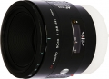

器材库 > 35mm画幅AF定焦镜头 > AF 50/2.8 Macro

详细规格
镜头类型
微距镜头
发布日期
未知
焦距
50mm
最大光圈
f/2.8
最小光圈
f/32
视角（对角）
47
镜头结构
7片/6组
光圈叶片
7片
最大放大倍率
1倍
驱动马达
AF马达
滤镜口径
55mm
镜头卡口
Minolta/Konica-Minolta/Sony AF
防抖
否
颜色
黑色
尺寸
68.00x59.00mm
重量
310g
laoka2012-05-05 01:504.75 分
操作性 4.50耐用性 5.00性价比 4.00解像力 5.00色彩还原 5.00机械结构 5.00
yeswjh2011-12-31 16:024.92 分
操作性 4.50耐用性 5.00性价比 5.00解像力 5.00色彩还原 5.00机械结构 5.00
chinamalong2010-09-01 23:134.42 分
操作性 3.50耐用性 4.00性价比 5.00解像力 5.00色彩还原 5.00机械结构 4.00
云的那边2009-11-07 22:354.58 分
操作性 4.00耐用性 5.00性价比 4.00解像力 5.00色彩还原 5.00机械结构 4.50
cityanimal2009-08-11 15:264.92 分
操作性 4.50耐用性 5.00性价比 5.00解像力 5.00色彩还原 5.00机械结构 5.00
HWJ2007-01-05 14:384.58 分
操作性 4.50耐用性 4.50性价比 4.00解像力 5.00色彩还原 5.00机械结构 4.50
风林火山2006-10-09 20:334.75 分
操作性 4.50耐用性 5.00性价比 4.00解像力 5.00色彩还原 5.00机械结构 5.00
子非鱼2005-04-29 14:114.83 分
操作性 4.00耐用性 5.00性价比 5.00解像力 5.00色彩还原 5.00机械结构 5.00
rangsank2004-03-17 06:074.75 分
操作性 4.50耐用性 5.00性价比 4.00解像力 5.00色彩还原 5.00机械结构 5.00
产品图 / 样片
外观图
评测 / 相关文章
该产品暂无存档的评测文章